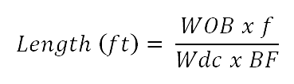
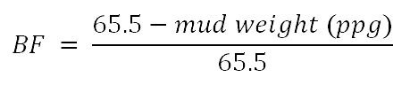

Length of bottom hole assemblý (BHA) necessary for a desired weight on bit (WOB).
Feet of drill pipe that can be used with a specific bottom hole assembly (BHA). 1. Length of bottom hole assembly necessary for a desired weight on bit :

Where ;
WOB = desired weight to be used while drilling
f = Safety factor to place neutral point in drill collars
Wdc = drill collar weight (lb/ft)
BF = buoyancy factor
Case :
Desired WOB while drilling =
lb
Safety factor
=
%
Mud weight
=
ppg
Drill collar weight =
lb/ft
Determine the total hydrostatic pressure of cement and mud in the annulus
a. Hydrostatic pressure of mud in annulus :
b. Hydrostatic pressure of LEAD cement :
2. Feet of drill pipe that can be used with a specific bottom hole
assembly (BHA)
NOTE : Obtain tensile strength for new pipe from cementing handbook or
other source.
a. Determine buoyancy factor

b. Determine maximum length of drill pipe that can be run into the hole
with a specific bottom hole assembly
c. Determine total depth that can be reached with a specific bottom hole
assembly :
Where ;
T = tensi1e strength (lb) for new pipe
f = safety factor to corrrect new pipe to no.2 pipe
MOP = margin of overpull
Wbha = BHA weight in air (lb/ft)
Wdp = drill pipe weight in air (lb/ft)
BF = buoyancy factor
Case :
Drill pipe (5.0 inch) =
lb/ft
Tensile strength
=
lb
BHA weight in air
=
lb
BHA length =
ft
Desired overpull =
lb
Mud weight =
ppg
Safety factor =
%
a. Buoyancy factor :
b. Maximum length of dril pipe that can be run into the hole :
c. Total depth that can be reached with this BHA and this drill pipe: